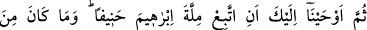
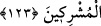

(s.a.)’e salat ve selam getirmeye iliştirilmiştir. Nitekim bu ümmetten namaz kılan bir
kimse: “Kemâ salleyte alâ İbrâhîme ve alâ âli İbrâhîm” diye duâ eder.
“Muhakkak ki o, âhirette de sâlihlerdendir.” Cennette yüksek derecelere sâhip olan
peygamberlerdendir. Bununla kastedilen, salahda kemale eren ve kemâlin son
derecesine ulaşanlardır.
123. Sonra da sana: “Doğru yola yönelerek İbrahim’in dinine uy! O müşriklerden
değildi.” diye vahyettik.
“Sonra da sana:” derecen yüce ve merteben yüksek olarak “Doğru yola yönelerek
İbrahim’in dinine uy!”
“Sümme” kelimesinde olan mertebe bakımından sonralık mânâsında, İbrahim (a.s.)’a
verilen şeylerin en büyüğünün Rasûlullah (s.a.)’in onun dinine tâbi olması olduğuna
tenbih vardır.
“el-Milletü” Allah’ın peygamberlerin lisânıyla kulları için vazettiği ilahi
buyruklardır. O ise Allah’a itâat îtibâriyle dinin bizzat kendisidir. İbrahim (a.s.)’ın
milleti (dini) ile kastedilen İslam’dır ki sırât-ı müstakîm diye ifâde edilir.
“O müşriklerden değildi.” diye vahyettik.” Bilakis o, tevhid ehlinin önderiydi. Bu
cümle, İbrahim (a.s.)’ın müşriklerin amel ve itikadından son derece uzak olduğunu
te’kid için daha önce geçen cümlenin tekrarıdır.
Âlimler der ki: Tâbi olup uyma emri, asırların değişmesiyle değişen amelî
yükümlülükler değil usûl (dinin asıl inanç) konularıdır. Rasûlullah (s.a.)’in ona tâbi
olması, ondan sonra peygamber olarak gönderilmesine binaendir. Aksi halde o,
öncekiler ve sonrakilerin Allah katında en değerli olanıdır.
Asıl sensin, gerisi senin tufeylindir/sana tâbidir
Sen bir pâdişahsın, cümlesi senin cemaatindir
Rasûlullah (s.a.), peygamberlik gelmeden önce İbrahim (a.s.)’ın dini üzereydi. Yani
Mekkeliler’in İbrahim ve İsmail (a.s.)’dan tevarüs ettikleri hac, nikah alış-veriş ve
yaşayış biçimlerine göre yaşardı. Tevhid inancına gelince; Mekkeliler bunu
değiştirmişlerdi. Hz. Peygamber (s.a.) ise bu konuda İbrahim (a.s.)’ın inancı üzereydi.
et-Te’vîlâtü’n-Necmiyye’de der ki: Rasûlullah (s.a.) İbrahim (a.s.)’a tâbi olma yoluna
girip de “Ben Rabbime gidiyorum” (es-Sâffât, 37/99) diyerek Allah’a yönelince;
Rasûlullah (s.a.)’in sırrına şöyle nidâ edildi: